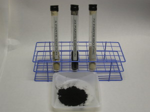

Test Dusts
{kind=link}
Dusts for all filter testing procedures
- ASHRAE dust used in 52.1, 52.2, and EN779 test procedures
- Custom blended test dusts
- ISO 12103-1 dusts
- A1 - Ultra Fine
- A2 - Fine (Formerly AC Fine / SAE Fine)
- A3 - Medium
- A4 - Coarse
Round robin testing confirms comparable performance results
When Blue Heaven ASHRAE Dust was developed, a comprehensive series of tests were conducted with three major filter manufacturers to verify the results were directly comparable with other sources of dust commonly available.
Reliable test results require consistent dust formulation
Reliable test results that allow accurate comparability from test to test require dust with a consistent formulation. Blue Heaven dust is manufactured in strict accordance with ASHRAE specifications (52.1 and 52.2). Our process control and state-of-the-art blending equipment assure each batch is produced per spec and with the exact same formulation. Blue Heaven test technicians have 16 years experience producing ASHRAE dust.
Made to order
Each batch is made to order and shipped promptly. No frustrating delays in receiving your supply. Included in each shipment is a Batch Report and Material Safety Data Sheet. (MSDS).
Product availability
- ASHRAE dust - 5 and 10 pound bags
- ISO dusts - 4 pound container